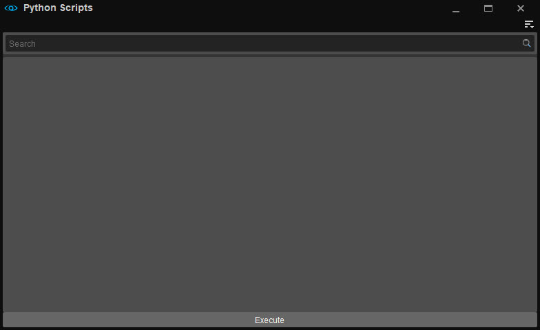

Python Scripts
The Python Scripts window lets you find and execute existing Python scripts. Simply search, select and hit Execute.

Depending on what you use as a basis for your project, Python scripts should be saved in different folders.
- When creating a project from scratch or from a template, save the script in <project folder>/Assets/ or a sub-folder of this folder.
- When modifying GameSDK, they can be saved in the GameSDK folder or any sub-folder of this folder.
Menu
The Menu can be accessed via the 
Toolbars
Option | Description | ||||
|---|---|---|---|---|---|
Customize... | Opens the toolbar customization window allowing users to customize existing toolbars, and/or create new toolbars within this tool. | ||||
Lock Toolbars | When disabled, the positions of toolbars and spacers within this tool can be changed by drag and drop. | ||||
Spacers | The following options allow users to use spacers in positioning their toolbars.
The Spacers menu options are only available when Toolbars → Lock Toolbars is disabled. | ||||
| Toolbars | Lists all default and custom toolbars (if any) created for this tool, allowing users to select which toolbar they'd like to hide or display. |
When a tool has a toolbar, whether this is a default one or a custom one, the options above are also available when right-clicking in the toolbar area (only when a toolbar is already displayed).
Help
Opens the documentation page for this tool.
Creating Python Plugins
For more information on how to create Python plugins, please see this page.